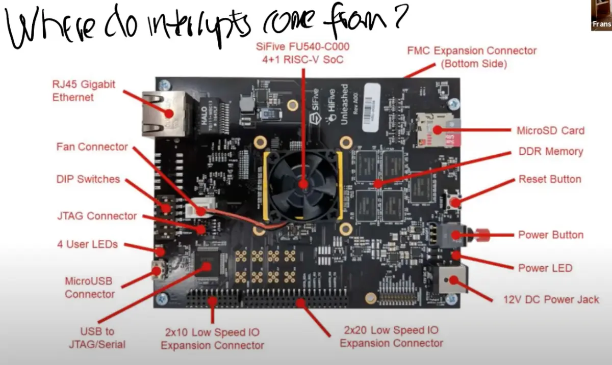

硬件中断
Table of Contents
中断对应的场景很简单，就是硬件想要得到操作系统的关注
例如网卡收到了一个packet，网卡会生成一个中断 用户通过键盘按下了一个按键，键盘会产生一个中断

3个差别:
- 异步：Interrupt handler与当前运行的进程在CPU上没有任何关联
- 并行：设备handler 和 CPU 同时运行
- 设备编程：每个设备都有一个编程手册

从左上角可以看出，有53个不同的来自于设备的中断。这些中断到达PLIC之后，PLIC会路由这些中断。图的右下角是CPU的核，PLIC会将中断路由到某一个CPU的核.
- PLIC会通知当前有一个待处理的中断
- 其中一个CPU核会claim接收中断，这样PLIC就不会把中断发给其他的CPU处理
- CPU核处理完中断之后，CPU会通知PLIC
- PLIC将不再保存中断的信息
设备驱动概述
管理设备 的代码称为 驱动 。如果查看代码的结构，可以发现大部分驱动都分为两个部分，bottom/top
接下来以uart驱动作为实例
bottom
bottom部分通常是 中断处理 ，并不运行在任何特定进程的context中，它只是处理中断
// handle a uart interrupt, raised because input has // arrived, or the uart is ready for more output, or // both. called from devintr(). void uartintr(void) { // read and process incoming characters. while(1){ int c = uartgetc(); if(c == -1) break; consoleintr(c); } // send buffered characters. acquire(&uart_tx_lock); uartstart(); release(&uart_tx_lock); }
top
top部分，是 用户进程 ，或者 内核的其他部分 去调用的 接口 ：
// alternate version of uartputc() that doesn't // use interrupts, for use by kernel printf() and // to echo characters. it spins waiting for the uart's // output register to be empty. void uartputc_sync(int c) { push_off(); if(panicked){ for(;;) ; } // wait for Transmit Holding Empty to be set in LSR. while((ReadReg(LSR) & LSR_TX_IDLE) == 0) ; WriteReg(THR, c); pop_off(); }
通常情况下，驱动中会有一些 队列 （或者说 buffer ）：
- top部分的代码会从队列中读写数据
- Interrupt handler（bottom部分）同时也会向队列中读写数据
Interrupt handler来说存在一些限制，因为它并没有运行在任何进程的context中 所以进程的page table并不知道该从哪个地址读写数据，也就无法直接从Interrupt handler读写数据
如何对设备进行编程
操作系统需要知道这些设备位于 物理地址空间的具体位置 ，然后再通过普通的 load/store 指令对这些地址进行编程
- load/store指令实际上的工作就是 读写 设备的控制寄存器
例如，对网卡执行store指令时，CPU会修改网卡的某个控制寄存器，进而导致网卡发送一个packet 所以这里的load/store指令不会读写内存，而是会操作设备
Console是如何显示出 $ ls
$ 是Shell程序的输出 而“ls”是用户通过键盘输入之后再显示出来的，实际上就是设备会将字符传输给UART的寄存器，UART之后会在发送完字符之后产生一个中断 线路的另一端会有另一个UART芯片（模拟的），这个UART芯片连接到了虚拟的Console，它会进一步将$ 显示在console上
对于“ls”：
- 当在键盘上按下一个按键，UART芯片会将 按键字符 通过 串口线 发送到另一端的UART芯片
- 另一端的UART芯片先将 数据bit 合并 成 一个Byte ，之后再 产生 一个 中断 ，并告诉处理器说这里有一个来自于键盘的字符
- SIE Supervisor Interrupt Enable 寄存器。这个寄存器中有一个bit（E）专门针对 例如UART的外部设备的中断
SSTATUS Supervisor Status 寄存器。这个寄存器中有一个bit来打开或者关闭中断
每一个CPU核都有独立的SIE和SSTATUS寄存器
- SIP Supervisor Interrupt Pending 寄存器。当发生中断时，处理器可以通过查看这个寄存器知道当前是 什么类型 的中断
第一个外设是console，这是print的输出位置。查看位于 console.c 的 consoleinit 函数：
void consoleinit(void) { initlock(&cons.lock, "cons"); // 初始化console相关的自旋锁，保护console的缓存区 uartinit(); // 初始化UART硬件，设置波特率、数据格式等 // connect read and write system calls // to consoleread and consolewrite. // 设置console设备的读写函数指针 （devsw数组中索引为CONSOLE的元素） devsw[CONSOLE].read = consoleread; devsw[CONSOLE].write = consolewrite; }
uartinit函数位于uart.c文件，这个函数实际上就是配置好UART芯片使其可以被使用：
void uartinit(void) { // disable interrupts. WriteReg(IER, 0x00); // special mode to set baud rate. WriteReg(LCR, LCR_BAUD_LATCH); // LSB for baud rate of 38.4K. WriteReg(0, 0x03); // MSB for baud rate of 38.4K. WriteReg(1, 0x00); // leave set-baud mode, // and set word length to 8 bits, no parity. WriteReg(LCR, LCR_EIGHT_BITS); // reset and enable FIFOs. WriteReg(FCR, FCR_FIFO_ENABLE | FCR_FIFO_CLEAR); // enable transmit and receive interrupts. WriteReg(IER, IER_TX_ENABLE | IER_RX_ENABLE); initlock(&uart_tx_lock, "uart"); }
运行完这个函数之后，原则上UART就可以生成中断了
但是因为还没有对PLIC编程，所以中断不能被CPU感知。最终，在kernel/main.c 的 main函数中，需要调用plicinit函数
void plicinit(void) { // set desired IRQ priorities non-zero (otherwise disabled). // 分别将 UART0 和 VIRTIO0 设备的中断优先级设置为 1 // 优先级必须为非零值，否则该中断会被禁用 // 确保这两个设备的中断能够被 PLIC 正常识别和处理 *(uint32*)(PLIC + UART0_IRQ*4) = 1; *(uint32*)(PLIC + VIRTIO0_IRQ*4) = 1; }
代码的第一行使能响应UART的中断，这里实际上就是设置PLIC会接收哪些中断，进而将中断路由到CPU 代码的第二行设置PLIC接收来自IO磁盘的中断
plicinit之后就是 plicinithart 函数。plicinit是由 0号CPU 运行，之后， 每个CPU的核 都需要调用 plicinithart 函数表明对于 哪些外设中断感兴趣
void plicinithart(void) { int hart = cpuid(); // 获取当前硬件线程的 ID // set enable bits for this hart's S-mode // for the uart and virtio disk. // 设置当前 hart 的 S 模式（Supervisor mode）中断使能位 // 使 UART0 和 VIRTIO0 设备的中断能够被该 hart 接收和处理 // 通过位运算将这两个设备的中断源打开。 *(uint32*)PLIC_SENABLE(hart) = (1 << UART0_IRQ) | (1 << VIRTIO0_IRQ); // set this hart's S-mode priority threshold to 0. // 设置当前 hart 的 S 模式中断优先级阈值为 0，表示所有优先级大于 0 的中断都可以被响应 *(uint32*)PLIC_SPRIORITY(hart) = 0; }
在plicinithart函数中，每个CPU的核都表明自己对来自于UART和VIRTIO的中断感兴趣 到目前为止，已经有了接收中断的外部设备PLC，PLIC也可以传递中断到单个的CPU 但是CPU自己还没有设置好接收中断，因为每个CPU还没有设置好SSTATUS寄存器
在实际运行进程之前，会执行 intr_on 函数来使得CPU能接收中断。intr_on函数只完成一件事情，就是 设置 SSTATUS 寄存器，*打开* 中断标志位
// enable device interrupts /** * @brief 启用 RISC-V 架构下的设备中断 * */ static inline void intr_on() { // 设置 sstatus 寄存器的 SIE 位，允许监督者模式下的中断 w_sstatus(r_sstatus() | SSTATUS_SIE); }
UART 驱动
UART设备在每次收到一个字符会产生一个中断，同样在每次发送一个中断后也会产生一个中断
top-half
在 init.c 的 main 函数创建了一个代表 console 的设备：
- 通过 mknod 操作创建了 console设备 。因为这是第一个打开的文件，所以这里的文件描述符 0
- 通过 dup 创建 stdout 和 stderr 。复制文件描述符0，得到了另外两个文件描述符 1 ， 2 。因此最终文件描述符0，1，2都用来代表console
if(open("console", O_RDWR) < 0){ mknod("console", CONSOLE, 0); open("console", O_RDWR); } dup(0); // stdout dup(0); // stderr
尽管console背后是uart设备，但是从应用程序来看，它就像是一个普通的文件。shell程序只是向 文件描述符2 写了数据
else if(f->type == FD_DEVICE){ if(f->major < 0 || f->major >= NDEV || !devsw[f->major].write) return -1; ret = devsw[f->major].write(1, addr, n); }
在 filewrite 函数中首先会判断 文件描述符的类型 。mknod生成的文件描述符属于 设备 FD_DEVICE
而对于设备类型的文件描述符，会为这个特定的设备执行设备相应的write函数
void consoleinit(void) { initlock(&cons.lock, "cons"); // 初始化console相关的自旋锁，保护console的缓存区 uartinit(); // 初始化UART硬件，设置波特率、数据格式等 // connect read and write system calls // to consoleread and consolewrite. // 设置console设备的读写函数指针 （devsw数组中索引为CONSOLE的元素） devsw[CONSOLE].read = consoleread; devsw[CONSOLE].write = consolewrite; }
- 因为现在的设备是console，所以这里会调用 console.c 中的 consolewrite 函数
int consolewrite(int user_src, uint64 src, int n) { int i; for(i = 0; i < n; i++){ // 循环遍历要写入的字节数 char c; // either_copyin(&c, user_src, src+i, 1) 用于从指定的源空间（用户或内核）拷贝一个字节到变量 c // 如果拷贝失败（返回 -1），则提前结束循环 if(either_copyin(&c, user_src, src+i, 1) == -1) break; uartputc(c); // 将读取的字符发送到 UART 设备进行输出 } return i; // 返回实际写入的字节数 }
通过 either_copyin 将字符拷入，之后调用 uartputc 函数，将字符写入给uart设备
所以可以认为consolewrite是一个uart驱动的top部分
uart.c 文件中的 uartputc 函数会实际的打印字符：
void uartputc(int c) { acquire(&uart_tx_lock); // 获取 UART 发送缓冲区的自旋锁 //这段代码在检测到系统处于 panic 状态时，让当前执行流陷入一个空转的无限循环，从而“冻结”在当前位置 // panicked 通常是内核级的全局标志，一旦发生致命错误被置位，后续路径（例如 UART 输出）就不再继续执行 // 以避免进一步破坏系统状态或与其他 CPU/上下文交错输出，确保 panic 信息的可读性与一致性 if(panicked){ for(;;) ; } while(uart_tx_w == uart_tx_r + UART_TX_BUF_SIZE){ // 如果发送缓冲区已满，阻塞等待 // buffer is full. // wait for uartstart() to open up space in the buffer. sleep(&uart_tx_r, &uart_tx_lock); // 休眠，等待 uartstart() 释放缓冲区空间 } uart_tx_buf[uart_tx_w % UART_TX_BUF_SIZE] = c; // 将字符 c 添加到发送缓冲区 uart_tx_w += 1; // 发送缓冲区写指针前移 uartstart(); // 启动 UART 发送缓冲区中的数据 release(&uart_tx_lock); // 释放 UART 发送缓冲区的自旋锁 }
在UART的内部会有一个 buffer 用来发送数据，大小是 32个 字符。同时还有一个为consumer提供的 读指针 和为producer提供的 写指针 ，来构建一个 环形的buffer
- 如果 读写指针相同 ，那么buffer是 空的
- 如果 写指针加32（缓冲区大小）等于读指针 ，那么buffer 满了
Shell是producer，调用uartputc函数，因为提示符“$”是送出的第一个字符。所以代码会走到while外面，字符会被送到buffer中，更新写指针，之后再调用 uartstart 函数
void uartstart() { while(1){ if(uart_tx_w == uart_tx_r){ // 缓冲区的读指针和写指针相等，表示没有数据可发送 // transmit buffer is empty. ReadReg(ISR); // 读取 UART 的中断状态寄存器（Interrupt Status Register） // 虽然这里没有对读取结果进行处理，通常这样做是为了清除某些硬件状态或中断标志，确保 UART 状态保持同步 return; } // 读取 UART 的线路状态寄存器（Line Status Register），然后与 LSR_TX_IDLE 进行按位与运算 if((ReadReg(LSR) & LSR_TX_IDLE) == 0){ // the UART transmit holding register is full, // so we cannot give it another byte. // it will interrupt when it's ready for a new byte. // 如果结果为 0，说明发送寄存器当前已满，不能再写入新的字节 // 此时，代码会直接 return，暂时停止发送操作 // 当发送寄存器满时，UART 会在准备好接收新字节时通过中断通知系统，届时再继续发送 return; } // 从发送缓冲区读取下一个待发送的字符 // 取模是为了实现缓冲区的循环利用，防止指针越界 int c = uart_tx_buf[uart_tx_r % UART_TX_BUF_SIZE]; // 从环形缓冲区 uart_tx_buf 中读取当前读指针 uart_tx_r 指向的字符 uart_tx_r += 1; // 读指针前移 // maybe uartputc() is waiting for space in the buffer. // 可能有 uartputc() 正在等待缓冲区有空间可用 // 调用 wakeup 唤醒所有等待 uart_tx_r 地址的进程 wakeup(&uart_tx_r); // 刚刚取出的字符写入 UART 的发送保持寄存器（THR），触发硬件实际发送该字节 WriteReg(THR, c); } }
uartstart就是 通知 设备 执行操作。先检查当前设备是否空闲
如果空闲的话，会从buffer中读出数据，然后将数据写入到 THR Transmission Holding Register 发送寄存器
这里相当于告诉设备，这里有一个字节需要你来发送
- uart设备会将数据送出，并产生一个UART中断
在某个时间点，CPU会收到中断，因为之前设置了要处理UART设备中断
接下来看一下，当收到中断时，实际会发生什么
bottom-half
在 trap.c 的 devintr 函数中，首先会通过 scause寄存器 判断当前中断是否是来自于 外设的 中断
- 如果是的话，再调用 plic_claim 函数来 获取 中断号
uint64 scause = r_scause(); // 读取（监督者陷入原因）寄存器 if(scause == 0x8000000000000009L){ // 处理外部中断 // this is a supervisor external interrupt, via PLIC. // irq indicates which device interrupted. int irq = plic_claim(); // 读取中断向量号，以此判断是哪个设备触发的 if(irq == UART0_IRQ){ // 串口中断 uartintr(); // 处理串口中断 } else if(irq == VIRTIO0_IRQ){ // 虚拟磁盘中断 virtio_disk_intr(); // 处理虚拟磁盘中断 } else if(irq){ // 无法判断 printf("unexpected interrupt irq=%d\n", irq); } // .... }
plic_claim函数位于plic.c文件中。在这个函数中，当前CPU核会告知PLIC，自己要处理中断，plic_claim会将中断号返回
对于UART来说，返回的中断号是10
接下来会调用 uartintr 函数处理中断
// 当 UART 设备产生中断时（可能是因为有新数据到达，或者发送缓冲区可以继续发送数据），系统会调用该函数进行响应 // 该函数通常由设备中断分发函数 devintr() 调用 void uartintr(void) { // read and process incoming characters. // 循环读取和处理UART 接收到的字符 while(1){ int c = uartgetc(); // 从 UART 读取一个输入字符 if(c == -1) // 如果没有新字符可读，跳出循环 break; consoleintr(c); // 通常是将字符传递给控制台输入处理逻辑，比如命令行或终端 } // send buffered characters. // 发送缓冲区中的字符 // 注意：需要给缓存区加锁，以避免不同线程同时访问引发数据竞争 acquire(&uart_tx_lock); uartstart(); // 调用 uartstart() 发送缓冲区中的字符 release(&uart_tx_lock); }
现在还没有通过键盘输入任何数据，所以uart的接受寄存器现在为空。代码会直接运行到uartstart函数，会将shell存储在buffer中的任意字符送出（发送给console）
实际上在提示符“$”之后，shell还会输出一个空格字符 因为write系统调用在uart发送提示符“$”的同时，之后将空格字符写入到buffer中 所以uart的发送中断触发时，可以发现在buffer中还有一个空格字符，之后会将这个空格字符送出
UART读取键盘输入
有时shell会调用 read 从键盘中读取字符。 在read系统调用的底层，会调用 fileread 函数。在这个函数中
else if(f->type == FD_DEVICE){ if(f->major < 0 || f->major >= NDEV || !devsw[f->major].read) return -1; r = devsw[f->major].read(1, addr, n); }
如果读取的文件类型是设备，会调用相应设备的read函数
int consoleread(int user_dst, uint64 dst, int n) { uint target; // 目标字节数，记录要读取的总字节数 int c; // 用于存储从控制台读取的字符 char cbuf; // 用于存储从控制台读取的字符，准备写入用户空间或内核空间 target = n; // 保存初始的要读取的字节数，以便在函数结束时返回 acquire(&cons.lock); // 获取控制台自旋锁，确保对控制台缓冲区的独占访问 while(n > 0){ // wait until interrupt handler has put some // input into cons.buffer. // 等待控制台缓冲区有可读数据 // 如果 cons.r 等于 cons.w，表示缓冲区为空，进入休眠 // 当 cons.r 不等于 cons.w 时，表示有数据可读 while(cons.r == cons.w){ if(killed(myproc())){ // 检查当前进程是否被杀死，如果是，则释放锁并返回 -1 release(&cons.lock); return -1; } sleep(&cons.r, &cons.lock); // 休眠，等待控制台输入 } // 从控制台缓冲区读取一个字符，并更新读取索引 cons.r // 这里使用模运算确保索引在缓冲区大小范围内循环 c = cons.buf[cons.r++ % INPUT_BUF_SIZE]; // 这段代码用于处理控制台输入中的文件结束符（EOF），即用户按下 Ctrl+D 的情况 if(c == C('D')){ // end-of-file 即 Ctrl+D）时，表示用户希望结束输入，相当于到达文件末尾 if(n < target){ // 已经读取了一些数据（n < target），说明本次读取还没有消耗掉所有请求的字节数 // Save ^D for next time, to make sure // caller gets a 0-byte result. // 为了保证下次读取时还能正确检测到 EOF，代码会将读取索引 cons.r 回退一位，把 Ctrl+D 留在缓冲区中 // 这样，下一次读取操作会立即遇到 EOF，返回 0 字节，符合标准输入行为 // 这种处理方式确保了 Ctrl+D 能正确地作为输入结束标志，并且多次读取时行为一致 cons.r--; } break; // 直接跳出循环，结束读取 } // copy the input byte to the user-space buffer. // 拷贝读取的字符到用户空间或内核空间 cbuf = c; if(either_copyout(user_dst, dst, &cbuf, 1) == -1) break; dst++; // 更新目标地址，准备写入下一个字符 --n; // 减少剩余要读取的字节数 if(c == '\n'){ // 如果读取到换行符（\n），表示一行输入结束 // a whole line has arrived, return to // the user-level read(). break; // 跳出循环，结束读取 } } release(&cons.lock); // 释放控制台自旋锁，允许其他线程访问控制台缓冲区 return target - n; // 返回实际读取的字节数，即初始请求的字节数减去剩余未读取的字节数 }
在某个时间点，假设用户通过键盘输入了“l”
- 导致“l”被发送到主板上的 UART芯片
- 产生 中断 之后再被 PLIC 路由 到某个 CPU核
- 触发 devintr 函数，devintr可以发现这是一个 UART中断
- uartintr 通过 uartgetc 函数获取到相应的字符
- 再将字符传递给 consoleintr 函数
// 注意：该函数不会阻塞等待数据 int uartgetc(void) { // ReadReg(LSR) 读取 UART 的线路状态寄存器（Line Status Register） // 该寄存器的最低位（0x01）用于指示接收缓冲区是否有数据准备好 if(ReadReg(LSR) & 0x01){ // input data is ready. return ReadReg(RHR); // 从接收保持寄存器（RHR）读取并返回输入字符 } else { return -1; // 如果没有数据可读，返回 -1 } } // handle a uart interrupt, raised because input has // arrived, or the uart is ready for more output, or // both. called from devintr(). // 当 UART 设备产生中断时（可能是因为有新数据到达，或者发送缓冲区可以继续发送数据），系统会调用该函数进行响应 // 该函数通常由设备中断分发函数 devintr() 调用 void uartintr(void) { // read and process incoming characters. // 循环读取和处理UART 接收到的字符 while(1){ int c = uartgetc(); // 从 UART 读取一个输入字符 if(c == -1) // 如果没有新字符可读，跳出循环 break; consoleintr(c); // 通常是将字符传递给控制台输入处理逻辑，比如命令行或终端 } // send buffered characters. // 发送缓冲区中的字符 // 注意：需要给缓存区加锁，以避免不同线程同时访问引发数据竞争 acquire(&uart_tx_lock); uartstart(); // 调用 uartstart() 发送缓冲区中的字符 release(&uart_tx_lock); }
在 consoleintr 中
- 字符会通过 consputc ，输出到console上给用户查看
- 字符被存放在buffer中
- 在遇到换行符的时候，*唤醒* 之前sleep的进程，也就是shell
- shell 再从buffer中将数据读出
// 该函数会处理输入中的删除（erase）和行清除（kill）操作 // 并将有效字符追加到控制台输入缓冲区 cons.buf 中 // // 如果用户输入了一整行（通常以回车或换行结束），函数会唤醒正在等待输入的 consoleread() // 让其可以读取完整的一行数据 void consoleintr(int c) { acquire(&cons.lock); // 获取控制台自旋锁，确保对控制台缓冲区的独占访问 switch(c){ case C('P'): // Print process list. procdump(); // 打印当前进程列表 break; case C('U'): // Kill line. 删除行 // 一次性删除当前输入行的所有字符，直到遇到上一行的换行符 \n 或缓冲区为空 // cons.e 是编辑索引，指向当前正在编辑的位置；cons.w 是写入索引，指向输入缓冲区的起始位置 // cons.e != cons.w 保证不会越过当前输入的起始位置，防止删除超出本行的内容 // cons.buf[(cons.e-1) % INPUT_BUF_SIZE] != '\n' 检查当前要删除的字符是否为换行符 // 如果遇到换行符就停止，确保只删除本行内容 while(cons.e != cons.w && cons.buf[(cons.e-1) % INPUT_BUF_SIZE] != '\n'){ cons.e--; // 将编辑索引向前移动一位 consputc(BACKSPACE); // 在终端上执行退格操作，视觉上删除一个字符 } break; case C('H'): // Backspace case '\x7f': // Delete key // 如果用户输入了退格键或删除键，检查是否有字符可以删除 if(cons.e != cons.w){ cons.e--; consputc(BACKSPACE); } break; default: // 处理控制台输入字符的常规情况，并将其存入输入缓冲区 if(c != 0 && cons.e-cons.r < INPUT_BUF_SIZE){ // 检查输入字符 c 是否有效且缓冲区未满 c = (c == '\r') ? '\n' : c; // 如果输入的是回车符 \r，会被转换为换行符 \n，以统一行结束符的处理 // echo back to the user. consputc(c); // 将输入的字符回显到控制台 // store for consumption by consoleread(). // 字符被存入输入缓冲区 cons.buf， cons.buf[cons.e++ % INPUT_BUF_SIZE] = c; // 编辑索引 cons.e 递增，确保缓冲区循环利用 if(c == '\n' || c == C('D') || cons.e-cons.r == INPUT_BUF_SIZE){ // wake up consoleread() if a whole line (or end-of-file) // has arrived. // 如果输入的是换行符、Ctrl+D（文件结束符，C('D')），或 缓冲区已满 cons.w = cons.e; // 将写入索引 cons.w 更新为当前编辑索引 cons.e // 唤醒等待输入的进程（如 consoleread()），表示一整行输入或输入结束已经到达，可以被读取 // 这保证了控制台输入的同步和行缓冲行为 wakeup(&cons.r); } } break; } release(&cons.lock); // 释放控制台自旋锁，允许其他线程访问控制台缓冲区 }
这里也是通过buffer将consumer和producer之间解耦，这样它们才能按照自己的速度，独立的并行运行 如果某一个运行的过快了，那么buffer要么是满的要么是空的 consumer和producer其中一个会sleep并等待另一个追上来
最后要说明的是：当用户输入时候，往往第一个字符是通过uartputc函数发送给UART设备的，之后产生了发送成功的中断，其余的字符都是在中断处理的uartinir函数里触发uartstart持续发送的